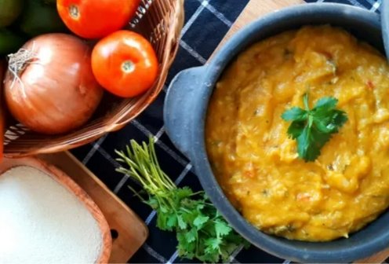

Pirão receita passo a passo
Pirão é uma tradição que mistura raízes indígenas, africanas e portuguesas como boa parte da culinária nordestina e ganhou força especialmente no Natal de Campina Grande e outras regiões do interior paraibano

Lista de ingrediente:
- 500g de carne de boi (preferencialmente músculo, acém ou paleta)
- 1 cebola grande picada
- 2 dentes de alho amassados
- 1 tomate picado
- 1 colher (sopa) de óleo ou manteiga da terra
- coentro fresco picado
- 4 xícaras de água (ou o suficiente para cobrir a carne)
Modo de preparo:
- Refogue os temperos:
Em uma panela grande, aqueça o óleo ou a manteiga da terra.
Adicione a cebola, o alho e o pimentão (se for usar).
Refogue até dourar
- Adicione a carne:
Corte a carne em pedaços médios e coloque na panela.
Refogue até selar bem todos os lados.
- Junte os demais ingredientes:
Acrescente o tomate picado e mexa bem.
Tempere com sal e pimenta-do-reino.
Adicione a água até cobrir a carne.
- Cozinhe:
Tampe a panela e cozinhe por cerca de 40 a 50 minutos, até a carne ficar bem macia e o caldo saboroso.
Se necessário, adicione mais água durante o cozimento.
- Prepare o pirão:
Com o fogo médio/baixo, vá adicionando a farinha de mandioca aos poucos, mexendo sempre pra não empelotar.
Continue até o pirão atingir a consistência desejada: mais firme ou mais mole, conforme seu gosto.
Dica: Sirva com arroz branco, feijão verde ou macaxeira cozida. Fica show!